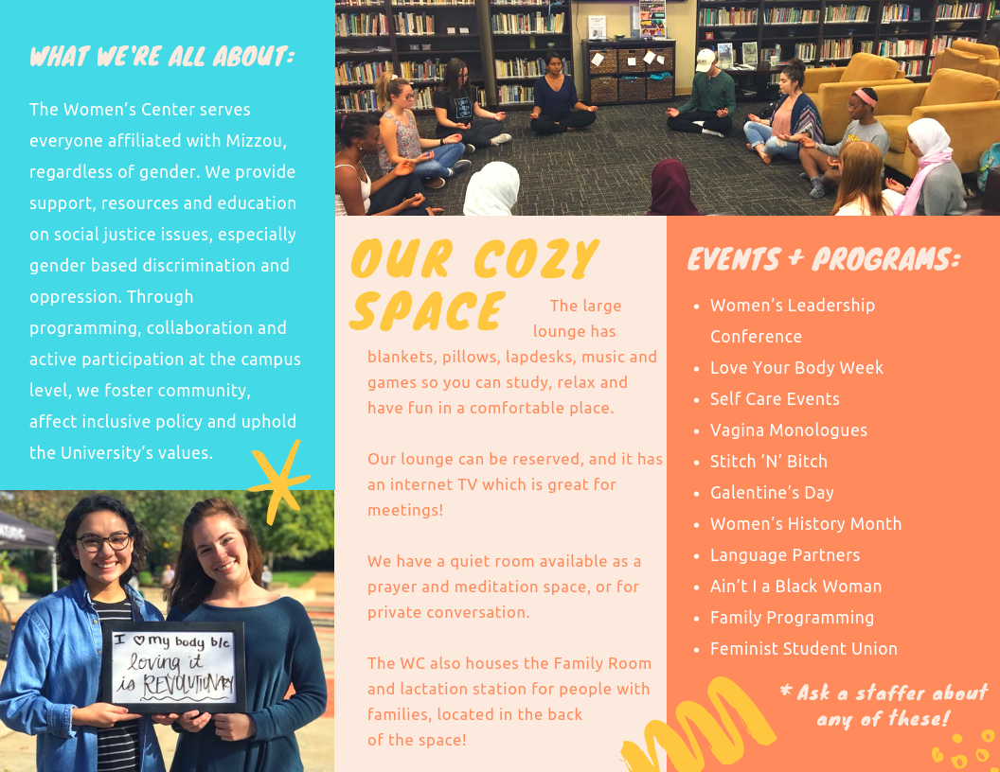
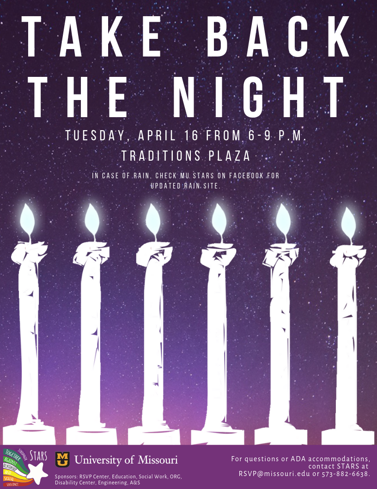

☰
☰
Since 2017, I have been the graphics designer at my university’s Women Center.
As part of the Social Justice Department, the Women’s Center was designed to provide a safe space on campus as well as offer numerous resources, including menstrual products, safe-sex products, heating pads and tea, to name a few.
In addition to designing flyers and buttons for events hosted by the Women’s Center, duties while on shift include: operating the front desk, checking out books from and organizing our library, assisting people with resources and personal problems, giving tours and referring people to local facilities.
Examples of graphics, flyers and button designs I’ve created for the Social Justice Centers:
A brochure I designed for the Women's Center:
A spring events flyer I designed for the Multicultural Center:

A flyer I created for a sexual assault awareness event held through the Relationship and Sexual Violence Center:
